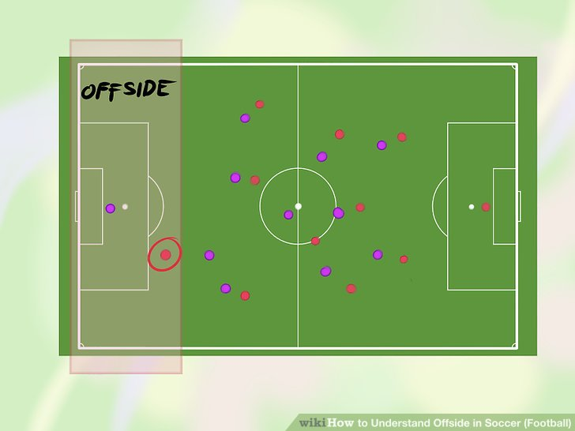

An 'offside' is the result of an attacking player getting closer to the opponent's goal line than both the ball and the last defender.

What happens
The purpose behind the offside rule is to prevent attackers from waiting too close to the goal.
If the attacker is on the opposing half of the field, and if any part of their head, torso, or legs are over the offside line, they will be judged offside.